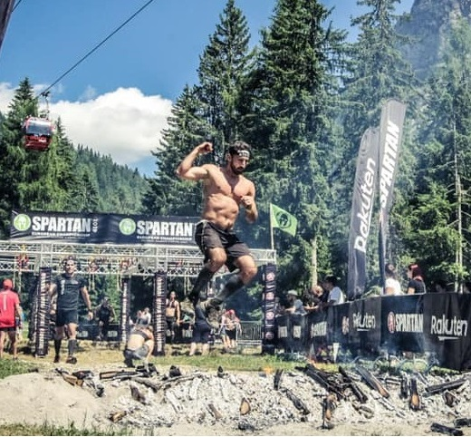
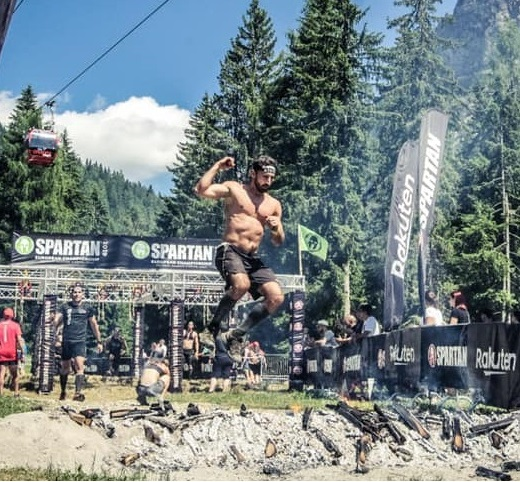

About Me
 

Nerd Inside
I Tech
Sin da piccolo sono sempre stato appassionato del mondo digital e di tutto ciò che vive attorno ad esso, amo scrivere codice ed imparare nuovi linguaggi di programmazione. Dammi un notebook, del codice da scrivere, una tazza di caffè e mi vedrai felice, almeno finché il codice non inizierà a buggarsi.
Sportivo Incallito
Sport
L'altra faccia della medaglia, amante dello sport. Pratico a livello amatoriale vari sport: corsa, cross-training, arrampicata, nuoto, snowboard e calcio. Quando non sono davanti ad un pc per programmare pratico sport, molti week-end li dedico alle gare di corsa, alle Ocr e alle Spartan race.
Folle Convinto
Full-Battery
Pieno di energia! sono una persona attiva che non si tira indietro, come nel lavoro, così nella vita privata. Amo viaggiare, conoscere nuove persone, scoprire posti nuovi immersi nella natura. Quando non faccio follie come lanciarmi con il paracadute mi aggiorno nel campo della programmazione, leggo o guardo serie tv.